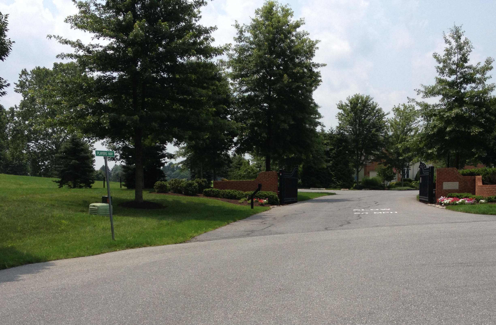

Lifestyle
|
The Villas at Cattail Creek is an age-restricted community for adults aged 55 and better. Residents have established neighborhood events and activities based on common interests and lifestyles. Residents can also obtain memberships at Cattail Creek Country Club and attend many events featured at their clubhouse. Additionally, many senior activities and interesting events take place 2 mi North on MD 97 at the Glenwood 50+ Senior Center. The Howard County Glenwood Branch Library is next door to the Senior Center. The Howard County Western Regional Park is located behind the Glenwood Fire Station on Carrs Mill just west of MD 97. The Villas at Cattail Creek is the ideal location to settle down in the prime area of Western Howard County. Its close proximity to Interstate 70 provides easy access to Baltimore, Ellicott City, and Columbia, and the Western Maryland cities like Frederick and Hagerstown. MD97 provides direct access to Olney and Washington to the South and Westminster to the North, and using the Cross County Connector South of Olney, to Gaithersburg and Rockville. MD32 East provides access to Clarksville, Columbia, Ft. Meade, Annapolis, and the Eastern Shore. |
 |
Website hosted on GitHub